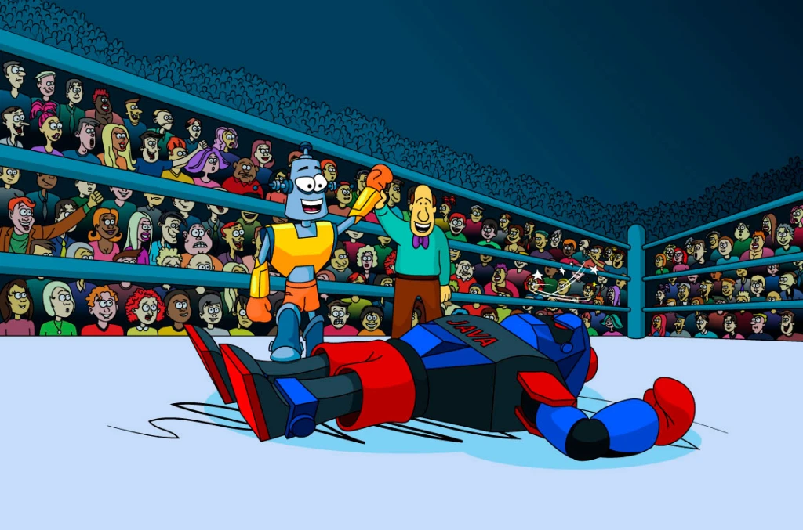
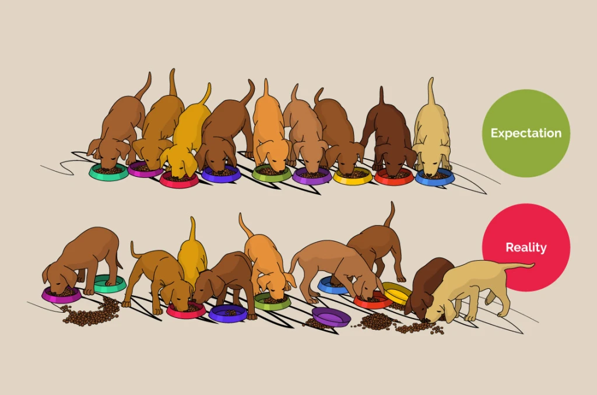
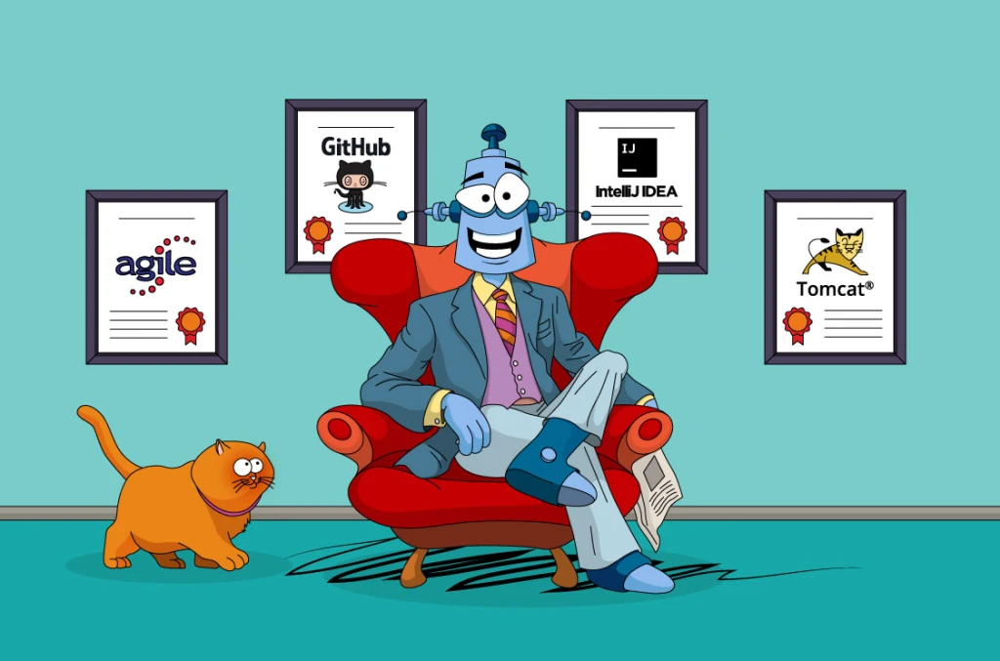
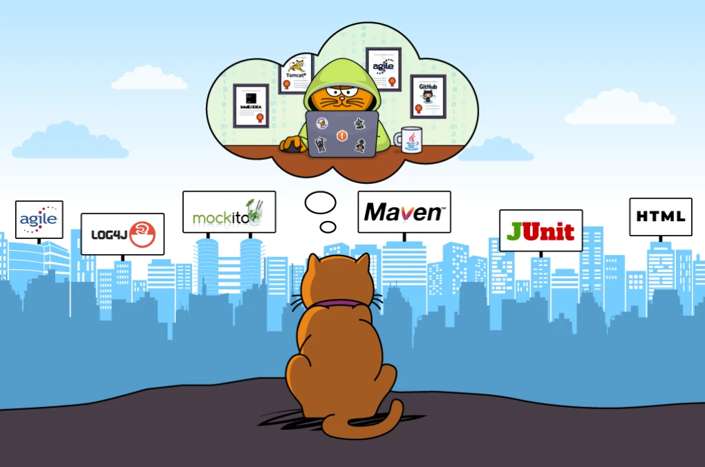
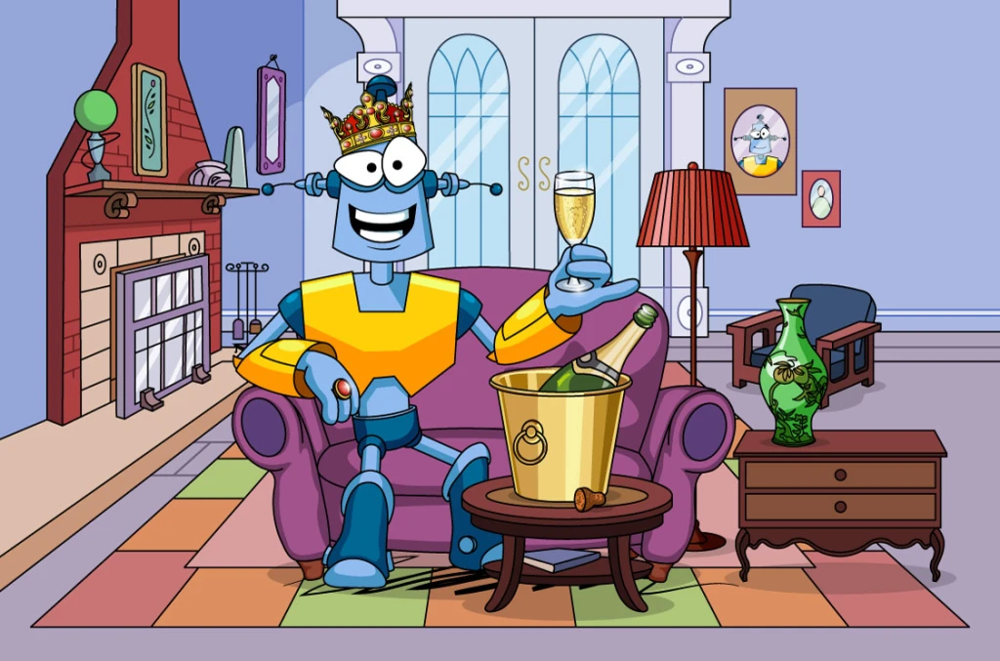

Карта квестов

Java Syntax Pro
Квест "Java Syntax PRO" усвоит даже тот, кто никогда не программировал. Вы узнаете, что такое классы, объекты, методы, переменные, типы данных, массивы, условные операторы и циклы. Глянете одним глазком на коллекции и ООП, а также начнете работать в среде IntelliJ IDEA, которой пользуются программисты во всем мире!
Доступен с 1-го уровня

Java Core
Квест "Java Core" рассчитан на тех, кто уже получил минимальную подготовку по Java (в рамках Квеста "Java Syntax"). Здесь вам предстоит пройти 10 увлекательных уровней, в которых вы изучите основы ООП, познакомитесь с потоками, сериализацией, перегрузкой методов, узнаете много нового об интерфейсах и множественном наследовании.
Доступен с 20-го уровня

Java Multithreading
Квест "Java Multithreading" познакомит студентов JavaRush с многопоточностью. В течение 10 уровней вы будете изучать устройство объекта Object, String, внутренние классы. Узнаете, как создавать и останавливать потоки, что такое DeadLock, Wait, notify, notifyAll, получите опыт работы с Jsoup и Swing, а также узнаете об автоупаковке.
Доступен с 30-го уровня

Java Collections
Квест "Java Collections" посвящен детальному изучению Java-коллекций и не только. Речь пойдет о работе с файлами и архивами, паттернах проектирования и их применении. Вы получите опыт работы с JSON, Guava, Apache Commons Collections, JUnit, узнаете подробности о сборке мусора в Java, познакомитесь с Git, RMI, DynamicProxy и JavaScript.
Доступен с 30-го уровня

JSP & Servlets
Квест “JSP & Servlets” познакомит вас с главными концепциями и инструментами разработки. Вы изучите паттерны проектирования и методологии разработки, познакомитесь с инструментами сборки (Maven) и тестирования (JUnit, Mockito), узнаете, зачем нужно логирование. Вы узнаете больше о веб-разработке.
Доступен
SQL & Hibernate
Квест посвящен продвинутому изучению БД в разрезе задач разработчика. Вы узнаете о том, зачем нужны БД и какими они бывают, о проектировании БД, типах данных, ORM Hibernate (архитектура Hibernate, конфигурация, основные аннотации, получение, обновление и удаление данных), а также прикладном интерфейсе JDBC и их взаимодействии.
Доступен

Online Internship
Стажировка — это работа над реальным проектом в течение 6 месяцев под руководством опытного наставника. Вы сможете на практике закрепить изученный материал главных четырех квестов JavaRush, а также узнаете много нового о реальной работе программиста. По сути, успешно пройденная стажировка — это ваша первая реальная работа и важный пункт в вашем резюме.
Доступен c 40-го уровня